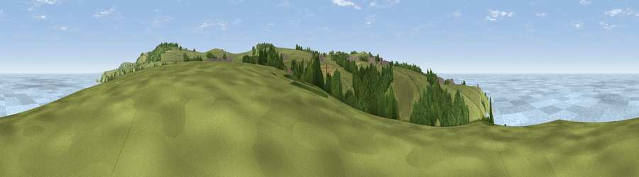

Viewpoint near Morvah
#4130 in England · top 18% of its area beats it · near MorvahThe view, rendered

A 360° render of this exact spot computed from the terrain model, tree cover and land cover — summer colours, afternoon light, calibrated against photographs of famous viewpoints. Real trees, hedges and buildings will differ in detail.
The panorama
Grey silhouette: terrain skyline in each direction (720 bearings, Earth curvature and refraction included). Dashed green: skyline with trees (+15 m) and buildings (+8 m) as obstacles. Blue strip: how far the ground is visible on each bearing.
Where the view opens
Wedge length = distance to the farthest visible ground on that bearing (vegetation-aware). Rings at 10, 25 and 50 km.
What fills the view
55% water · 29% grassland · 13% woodland · 2% cropland · 1% shrubland
Angular shares of the visible panorama (visual magnitude), not map area. Landscape diversity 0.47 (0–1 Shannon).
Key numbers
More beautiful places nearby
The staircase of upgrades: each row has a higher view potential than everything closer. Driving times are estimates from straight-line distance, calibrated against real road routing — check an actual route before setting out.
| Place | Direction | Drive | Score |
|---|---|---|---|
| Viewpoint near Bojewyan | SW · 1 km | ~2 min | 73.4 |
| Viewpoint near Pendeen | SSW · 2 km | ~5 min | 80.8 |
| Viewpoint near Morvah | E · 2 km | ~6 min | 83.2 |
| Viewpoint near Porthmeor | E · 3 km | ~7 min | 84.8 |
| Rosewall Hill | ENE · 10 km | ~19 min | 88.0 |
| Viewpoint near Combe Martin | NE · 164 km | ~186 min | 88.9 |
| Holdstone Hill | NE · 166 km | ~187 min | 90.2 |
| The Knoll | ENE · 220 km | ~236 min | 91.0 |
50.16541, -5.65292 · source: screening · position refined by local search. Computed location — check access rights before visiting.